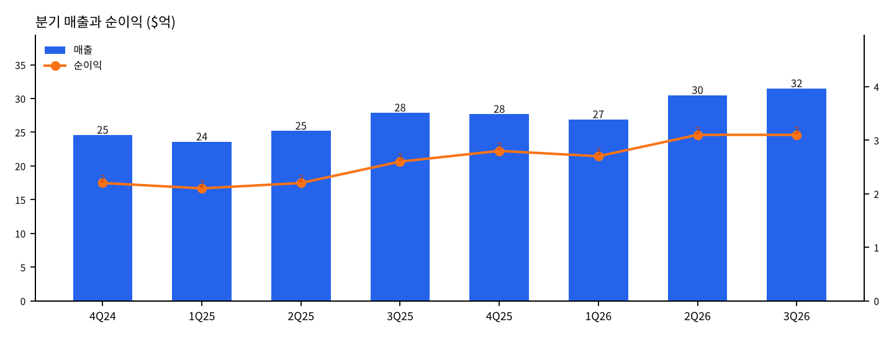
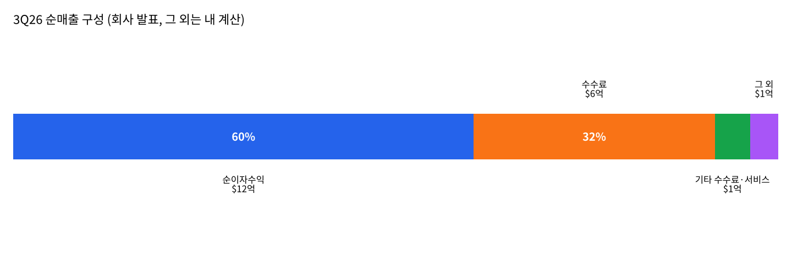
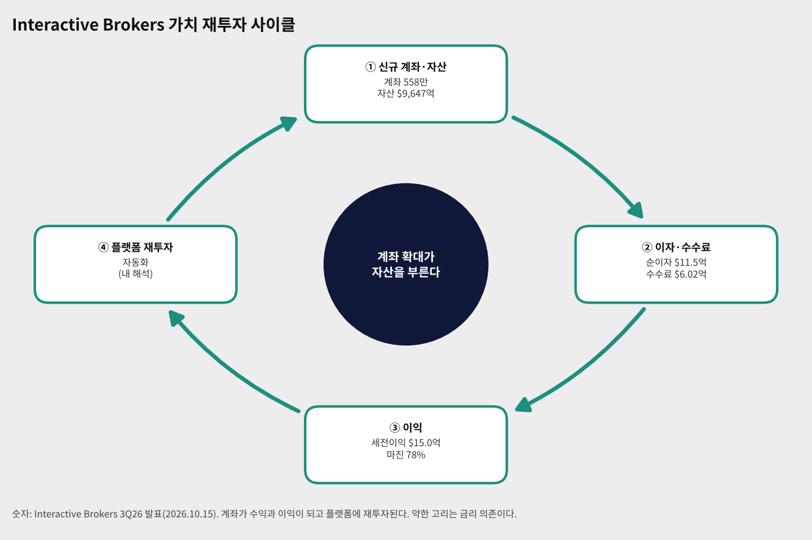

Interactive Brokers는 자동화된 거래 플랫폼으로 낮은 비용에 거래를 중개하고 예탁자산 이자로도 돈을 번다. 자동화 덕분에 마진이 높다.
| 항목 | 내용 |
|---|---|
| 종목 | Interactive Brokers (IBKR) · NASDAQ · 금융(증권중개) · 코네티컷 그리니치 |
| 최근 분기(3Q26) | 순매출 $19.1억, 조정 EPS $0.67 |
| 핵심 상품 | 주식·옵션·선물·외환 중개 |
| 직원 수 | 약 3,200명(트레이딩뷰) |
| 멀티플 | PER·PEG·P/S는 08~10 항목 표 참조 |
| 직책 | 인물 | 역할·특징 |
|---|---|---|
| 회장 | 토머스 피터피(Thomas Peterffy) | 설립자(확인 필요) |
| CEO | (확인 필요) | 회사 공개 자료 기준 확인 필요 |
경영 스타일: 자동화. 사람 대신 시스템으로 비용을 낮춰 마진을 만든다.
전 과정을 자동화해 직원 수 대비 계좌 수가 많다.
계좌 +35%, 고객 자산 +27%.
다음 실적발표는 세 가지 질문에 답하는 자리다.
1. 계좌 증가가 +30%대를 유지하나?
2. DARTs 부진이 이어지나?
3. 금리 변화가 순이자수익에 주는 영향은?
한 줄 판정 규칙: 첫 질문(계좌 증가)이 이어지면 약한 고리(금리 의존)가 가려진다.
일정: 4Q26 실적은 2027.01.19 발표 예정이다.
| 분기 | 매출 | 순이익 | EPS | 조정 EPS | 특이 사항 |
|---|---|---|---|---|---|
| 4Q24 | $24.6억 | $2.2억 | 0.49 | 0.51 | |
| 1Q25 | $23.6억 | $2.1억 | 0.48 | 0.47 | |
| 2Q25 | $25.2억 | $2.2억 | 0.51 | 0.51 | |
| 3Q25 | $27.9억 | $2.6억 | 0.59 | 0.57 | |
| 4Q25 | $27.7억 | $2.8억 | 0.63 | 0.65 | |
| 1Q26 | $26.9억 | $2.7억 | 0.60 | 0.60 | |
| 2Q26 | $30.5억 | $3.1억 | 0.69 | 0.69 | |
| 3Q26 | $31.5억 | $3.1억 | 0.69 | 0.67 | 세전마진 78%, 고객 계좌 558만 |
매출은 트레이딩뷰 스캐너의 분기 총매출이라 회사가 발표한 순매출과 다를 수 있다. 스캐너 매출은 총수익 기준이라 회사의 순매출($19.1억)과 다르다. 조정 EPS 열은 회사의 조정 기준이다. 매출·순이익·EPS(GAAP 희석)는 트레이딩뷰 스캐너, 조정 EPS는 트레이딩뷰 실적 페이지의 Reported 값이다. 분기 정렬은 오래된 분기→최신이다.

흐름 요약: 최근 분기 매출은 $31.5억로 전년 동기 $27.9억 대비 +12.9%, 순이익은 $3.1억(전년 $2.6억)다. 최근 4분기 GAAP EPS는 $2.61, 조정 EPS는 $2.61다.
| 항목 | 내용 | 3Q26 금액 | 비고 |
|---|---|---|---|
| 순이자수익 | 예탁자산 이자 | $11.5억 | +19% |
| 수수료 | 거래 수수료 | $6.02억 | +12% |
| 기타 수수료·서비스 | 기타 | $0.88억 | +33% |
| 그 외(내 계산) | 기타 수익 | $0.70억 | 순매출 $19.1억에서 위 항목을 뺀 값 |

순이자수익이 60%다. 금리에 따라 수익이 달라진다.
Interactive Brokers는 낮은 비용과 좋은 체결로 거래를 중개하는 것을 목표로 한다.
| 축 | 내용 |
|---|---|
| 고객 | 계좌 558만 |
| 자산 | $9,647억 |
| 마진 | 세전마진 78% |

| 이동평균 | 값 | 종가 대비 | 위치 |
|---|---|---|---|
| 5일선 | $78.89 | -3.1% | 종가 아래 |
| 20일선 | $78.92 | -3.1% | 종가 아래 |
| 50일선 | $84.25 | -9.3% | 종가 아래 |
| 100일선 | $88.16 | -13.3% | 종가 아래 |
| 200일선 | $83.15 | -8.1% | 종가 아래 |
52주 고가 $98.75(2026-08-25)·저가 $58.95(2025-11-21) 범위에서 종가 $76.45는 모든 이동평균선 아래이고.
| 규칙 | 기준 | 현재 값 | 신호 |
|---|---|---|---|
| 장기 추세 필터 | 종가 vs 200일선 | $76.45 < $83.15 | 매도 |
| 중장기 교차 | 50일선 vs 200일선 | $84.25 > $83.15 | 매수 |
| 단기 교차 | 20일선 vs 50일선 | $78.92 < $84.25 | 매도 |
| 돈키언 채널 | 55일 고가 $93.94 / 저가 $71.65 | 중간값 $82.80 아래 | 매도 |
| 1개월 모멘텀 | 21거래일 수익률 | -7.8% (기준 $82.91) | 매도 |
| 3개월 모멘텀 | 63거래일 수익률 | -14.9% (기준 $89.85) | 매도 |
| 6개월 모멘텀 | 126거래일 수익률 | -8.8% (기준 $83.79) | 매도 |
| 12개월 모멘텀 | 252거래일 수익률 | +20.6% (기준 $63.41) | 매수 |
| 종합 (8개 평균) | -0.50 | 매도 |
해석: 매수 신호 2개(중장기 교차, 12개월 모멘텀), 매도 신호 6개(장기 추세 필터, 단기 교차, 돈키언 채널, 1개월 모멘텀, 3개월 모멘텀, 6개월 모멘텀). CTA 점수 -0.50(매도). 14일 ATR $3.70 (4.8%), 52주 고가 $98.75 · 저가 $58.95.
| 가격 | 기준 | 무엇이 바뀌나 |
|---|---|---|
| $93.94 | 55일 고가 | 돌파 시 채널 상단 갱신 |
| $89.85 | 3개월 모멘텀 기준가 | 종가가 이 가격 위면 3개월 신호 매수 |
| $83.79 | 6개월 모멘텀 기준가 | 종가가 이 가격 위면 6개월 신호 매수 |
| $83.15 | 200일선 | 종가가 이 선 위/아래인지로 장기 추세 신호가 바뀜 |
| $82.91 | 1개월 모멘텀 기준가 | 종가가 이 가격 위면 1개월 신호 매수 |
| $82.80 | 돈키언 중간값 | 55일 채널 중간값 위/아래로 신호가 바뀜 |
| $71.65 | 55일 저가 | 이탈 시 채널 하단 갱신 |
| $63.41 | 12개월 모멘텀 기준가 | 종가가 이 가격 위면 12개월 신호 매수 |
가격 수준은 신호가 바뀌는 기준선일 뿐 진입·청산 가격 제안이 아니다. 20일/50일 교차는 이동평균 자체가 움직여 단일 가격으로 표시하지 않았다. 일봉·주봉은 종가 기준 직접 계산(고저 데이터 미사용)이다.
| 악재 요인 | 내용 | 강도 |
|---|---|---|
| 금리 의존 | 순이자수익이 매출의 60% | 중간 |
| 거래 활동 | DARTs 컨센서스 하회 | 중간 |
| 시장 변동 | 시장 거래량에 연동 | 참고 |
| 티커 | 회사 | PER(TTM) | PEG | P/S | EPS 성장(YoY) |
|---|---|---|---|---|---|
| IBKR | Interactive Brokers | 29.3배 | 1.12 | 11.17배 | +26% |
| SCHW | Charles Schwab | 15.8배 | 0.42 | 5.22배 | +38% |
| HOOD | Robinhood | 31.9배 | – | 12.26배 | -10% |
| LPLA | LPL Financial | 15.8배 | 0.27 | 1.09배 | +60% |
| MS | Morgan Stanley | 14.4배 | 0.49 | 3.59배 | +29% |
비교 결론: Interactive Brokers의 PER 29.3배는 Charles Schwab·LPL Financial·Morgan Stanley보다 높고 Robinhood보다 낮다. PEG 1.12는 Charles Schwab(0.42)·LPL Financial(0.27)·Morgan Stanley(0.49)보다 높다.
현금·부채는 트레이딩뷰 스캐너 값이다. 증권사라 고객 예수금이 크다.
| 지표 | 값 | 출처 | 해석 |
|---|---|---|---|
| 현금·단기투자 | $1,030억 | 트레이딩뷰 스캐너(최근 분기) | |
| 총부채 | $354억 | 트레이딩뷰 스캐너(최근 분기) | |
| 순부채(부채−현금) | $-676억 | 내 계산 | 현금 대비 부채 부담 |
| 잉여현금흐름(TTM) | $165억 | 트레이딩뷰 스캐너 | |
| TTM 매출 | $117억 | 트레이딩뷰 스캐너 |
| 기준 | 매출 | P/S | 비고 |
|---|---|---|---|
| 내 계산(종가 ÷ 최근 4분기 매출 합계) | $116.6억 | 11.17배 | 시총은 정렬용 데이터에서만 사용 |
| 동종(트레이딩뷰) | – | SCHW 5.22배 · HOOD 12.26배 · LPLA 1.09배 · MS 3.59배 | 11.19 |
해석: 부채의 대부분이 고객 예수금과 관련된 항목이다(내 해석).
EBITDA는 영업활동의 현금 창출력을 보는 지표이고, PEG는 PER을 EPS 성장률로 나눈 값이다. EBITDA·FCF는 트레이딩뷰 TTM 값이다.
| 지표 | 값 | 산출 |
|---|---|---|
| EBITDA(TTM) | $102억 | 트레이딩뷰 스캐너 |
| EBITDA 마진 | 87.2% | EBITDA ÷ TTM 매출(내 계산) |
| FCF 마진 | 141.0% | FCF ÷ TTM 매출(내 계산) |
| PER(GAAP TTM) | 29.3배 | $76.45 ÷ $2.61 |
| PER(조정 TTM) | 29.3배 | $76.45 ÷ $2.61 |
| 방식 | PER | EPS 성장률 | PEG | 판정 |
|---|---|---|---|---|
| GAAP EPS (TTM $2.61) | 29.3배 | +26% ($2.07 → $2.61) | 1.12 | 기준 초과 |
| 조정 EPS (TTM $2.61) | 29.3배 | +27% ($2.06 → $2.61) | 1.10 | 기준 초과 |
판정: GAAP EPS 기준 PEG 1.12 → 1.0 초과 PEG 기준은 1.0 이하 투자 적격, 0.5 이하 적극 매수다. EPS 성장률은 최근 4분기 EPS 합계를 직전 4분기 합계와 비교한 값(내 계산)이고, 일회성 항목이 있으면 조정 EPS 행을 함께 본다.

Interactive Brokers의 사이클: 계좌가 자산과 수익을 키우고 이익이 플랫폼에 재투자돼 다음 계좌를 부른다.
| 고리 | 현재 숫자·근거 |
|---|---|
| ① 신규 계좌·자산 | 고객 계좌 558만(+35%) · 고객 자산 $9,647억(+27%) |
| ② 이자·수수료 | 순이자수익 $11.5억(+19%) · 수수료 $6.02억(+12%) |
| ③ 이익 | 세전이익 $15.0억(+14%) · 세전마진 78% |
| ④ 플랫폼 재투자 | 재투자 금액은 보고서에 없음(내 해석) |
사이클의 특징: 약한 고리는 금리 의존이다. "(내 해석)"은 보고서 수치가 아닌 해석이다.